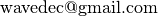
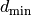
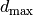
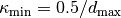
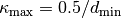
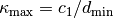
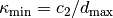
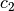
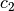

User’s guide: WaveDecActive¶
WaveDecActive allows to model Rayleigh waves with circular wavefront. This is necessary whenever the sensors are placed near the source. When the source is close it is necessary to take into account the curvature of the wavefront and the amplitude decay due to geometrical spreading. This work was developed in [Maranò_et_al_2017b].
Rayleigh waves radiating from a known source are modelled. Dispersion curve and ellipticity angle curve are retrieved.
A classical usage for WaveDecActive is the analysis or recordings of active seismic experiments from one or two dimensional arrays.
In particular it may be very practical to combine active and passive surveys using the same two dimensional array. A two dimensional array is deployed to measure ambient vibrations (passive survey) and the recordings are analysed using WaveDec. At the end of the survey, Rayleigh waves are generated by using, for example, a hammer in combination with a metallic plate. The excitation of seismic waves (active survey) can be repeated multiple times at the same location (multiple shots) and at different locations (multiple source positions). Active recordings are analysed using WaveDecActive. Examples are found in [Maranò_et_al_2017b].
Note
Currently, WaveDecActive processes only the translational motions. If you are interested in the analysis of rotational motions and circular wavefronts, please send me an email .
A typical command to run WaveDecActive looks as follows:
$ WaveDecActive.py --config_file /path/to/config/file/MyConfig.yaml
As a command line option we specify the path and name of a configuration file. This configuration file contains all the settings that you may wish to specify, including input/output and processing parameters. The syntax of this configuration file is described below.
To quickly display the traces it is possible to use the command line flag --plot
$ WaveDecActive.py --config_file /path/to/config/file/MyConfig.yaml --plot
For example, a quick look at the waveform may reveal that the recordings of the sensors closest to the source is clipped and that they must be excluded from the processing.
Input files¶
The configuration file and the output files of WaveDecActive are very similar to those used by WaveDec. Therefore in this documentation we solely highlight the differences between the two.
Configuration file¶
The configuration file necessary to run WaveDecActive includes all the parameters described for a WaveDec configuration file.
In addition, there are few mandatory parameters necessary to run WaveDecActive.
A fragment of a possible WaveDecActive file is shown below. (Only the parameters pertaining to WaveDecActive are shown)
...
SourcePosition : [685128.025, 257495.474] # Position of the source [Easting, Northing] in meters.
ShotStarts: [2.2, 5.0, 18.1] # Beginning of each shot, in seconds.
ShotDuration: 0.8 # Duration of the time window to be analysed, in seconds.
...
The parameter SourcePosition indicates the position of the active source. The position is specified in Cartesian coordinates in the same reference system used for the sensors’ positions. It is possible to specify only a single source position. In case of multiple shooting locations, it is necessary to consider multiple configuration files.
The vector parameter ShotStarts specifies the beginnings of the waveforms to be considered in the analysis. Since typically multiple shots are performed at each shooting location, this parameter is an array of floating point values. The values are seconds since the beginning of the recording.
The parameter ShotDuration indicate the duration of a shot in seconds. The parameter is a scalar value and all the shots are considered to have the same duration.
The above parameters are shared among all the traces. These parameters must be chosen in order to include entirely the waveforms of interest. For example, attention should be payed not to trim the initial or the final parts of the waveforms at the closest and/or furthermost sensors from the source.
Before running the actual processing, execute WaveDecActive with the flag --plot. It will be possible to visually inspect the traces and each shot in order to verify that all the parameters are inserted correctly.
Tip
If your output files are empty or present very few waves, try with a smaller Gamma (e.g. Gamma: 0.5, Gamma: 0.1…). In our experience, this is necessary at most active survey sites.
Data¶
Input data is provided as SAC files. See the relevant documentation of WaveDec.
Output files¶
The output is saved to CSV files in the directory specified in the configuration file by OUTPUT. The output files can be opened with a spreadsheet or with a simple text editor.
Estimated wavefield parameters¶
Output files are analogous to the output files generated by WaveDec.
The only difference is the lack of the column Azimuth in the output file. In fact, there is no azimuth to be estimated in the circular wave model.
Resolution limits¶
Similarly to WaveDec, the file ArrayResolutionLimits.csv contains the resolutions limits of the array.
The study of resolution limits is an intricate matter. The resolution limits provided here should be considered as approximate and indicative only. Good results may show up outside the resolution limits, and bad results inside the limits. Be wise and use your expertise.
Let  and  be the smallest and the largest interstation distance in the offset domain. In the offset domain, the distance of the sensor from the source are considered.
The smallest and largest resolvable wavenumbers are defined (in 1/meter) as  and .
Tip
The resolution limits are computed as  and . The value of  and  can be changed in the file
and  can be changed in the file wdSettings.py.
Array Layout¶
The file ArrayLayout.csv contains the coordinates of the sensors. These values correspond with the values contained in the header of the input files.
The file SourcePosition.csv contains the coordinates of the source. This value corresponds with the value provided in the configuration file.
Log file¶
The file WaveDecActive.log is saved in the same directory specified by OUTPUT. It contains all the output printed to screen from WaveDecActive.
Analysis of the output files¶
The script wdPicker.py allows to visualise and perform some analysis of WaveDecActive output files. See User’s guide: wdPicker for details.